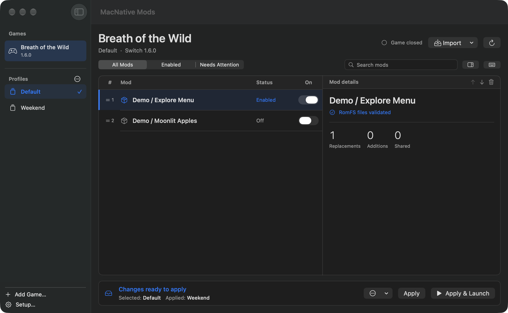
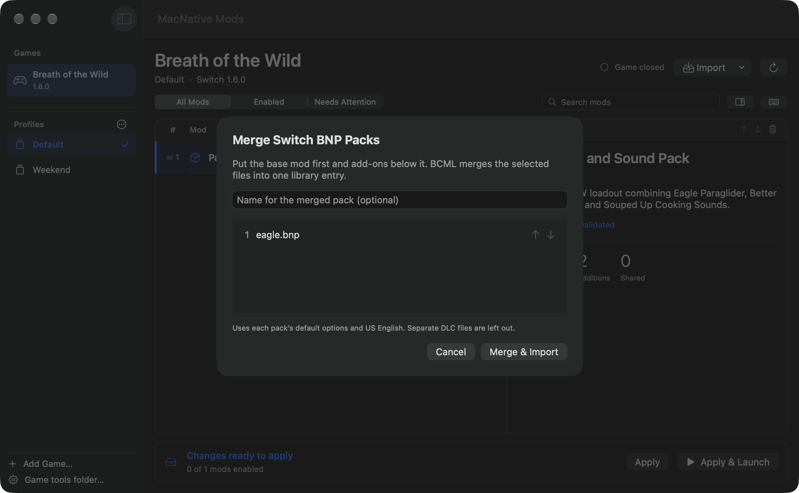

One library, several loadouts.
Keep a clean setup and a modded one. Profiles remember enabled packs and load order and share your existing game saves.
0.2.5 beta for Apple silicon
Import Switch mods, build a loadout, and launch your MacNativeGames app from one window. Start with Breath of the Wild 1.6.0.
macOS 26 or later, Python 3.14, and a compatible MacNativeGames checkout

Gameplay tested on Switch BOTW 1.6.0 through MacNativeGames.
See tested packsStart with a Switch mod for your installed game version. The catalog tells you which download and format were tested.
Open MacNative Mods, pick your installed game, and point it to the supported MacNativeGames checkout if asked.
Choose a Switch RomFS folder or archive. For BOTW 1.6.0 BNPs, set up BCML and select the base pack and its add-ons together. For compatible BNPs, choose Open With → MacNative Mods in Finder to review the import.
Enable the pack, quit the game if it is open, and select Apply & Launch.
See a pack go into a profile and the manager prepare it for launch.
Watch the demo
Keep a clean setup and a modded one. Profiles remember enabled packs and load order and share your existing game saves.
Check required packs and shared files. For BOTW 1.6.0, Apply combines supported resource-size changes and keeps the previous overlay if a merge fails.
Send the loadout and its order. The receiving Mac installs matching packs from their authors.
Gameplay evidence is tracked separately from file validation. Start with the verified version when trying the manager.
MacNative Mods is an independent companion for MacNativeGames. Bring your own installed game and download mods from their creators.